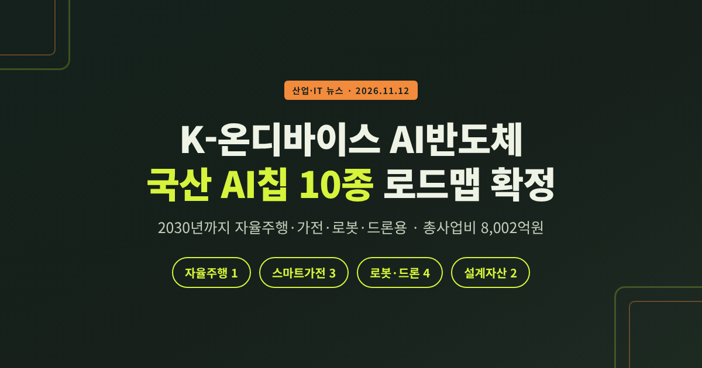
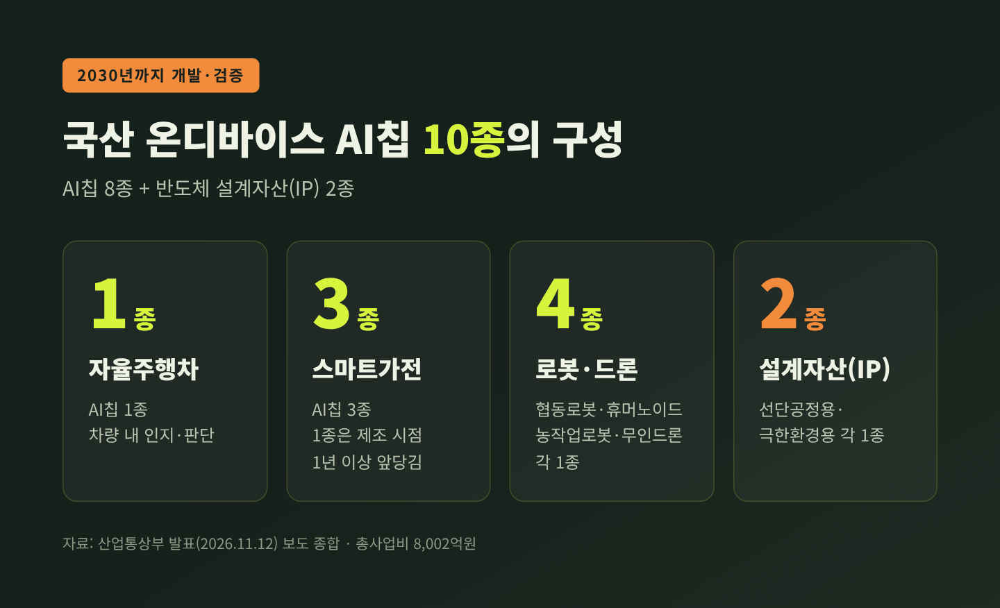
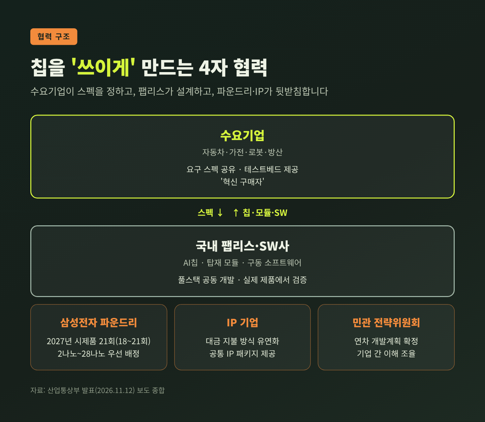
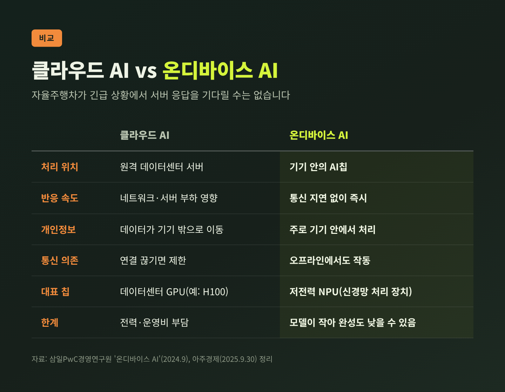
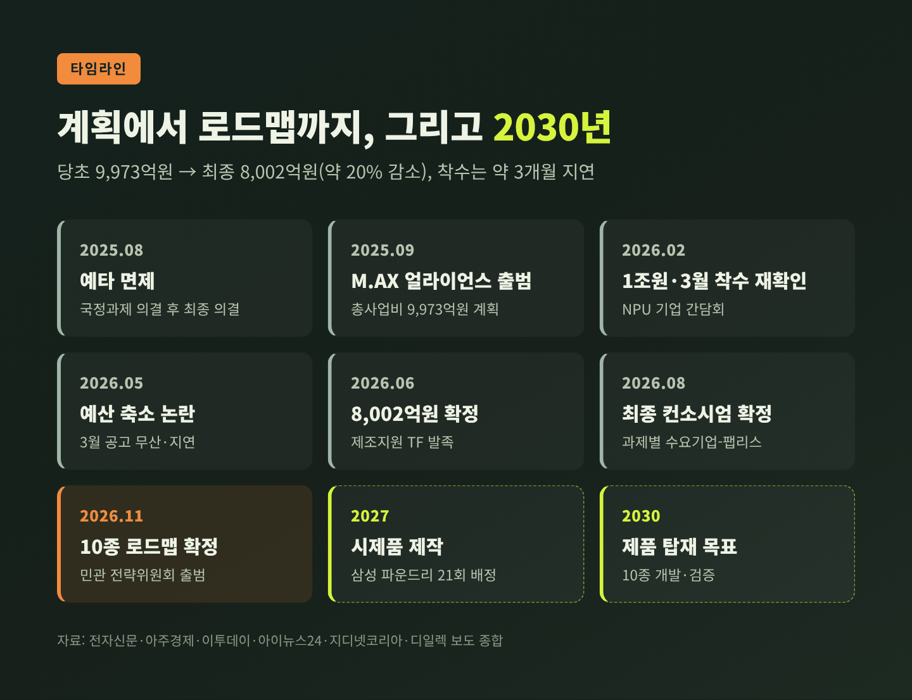
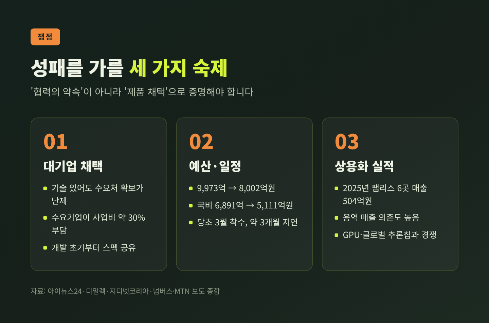

K-온디바이스 AI반도체 로드맵, 2030년까지 국산 AI칩 10종 개발

오늘은 정부가 11월 12일 확정한 'K-온디바이스 AI반도체' 로드맵을 정리해 보겠습니다. 무엇을 언제까지 만드는지, 예산은 왜 줄었는지, 남은 숙제는 무엇인지 차례로 짚어봅니다.
세 줄 요약
- 산업통상부가 8,002억원 규모 국책 프로젝트의 세부 로드맵을 확정했습니다. 2030년까지 자율주행차·가전·로봇·드론용 국산 AI칩 8종과 설계자산(IP) 2종, 모두 10종을 개발·검증합니다.
- 삼성전자 파운드리는 2027년 시제품 제작 21회(보도에 따라 18~21회)를 2나노~28나노 공정에 우선 배정하고, 수요 대기업은 개발 단계부터 스펙과 시험 환경을 내놓습니다.
- 당초 9,973억원으로 출발한 사업비는 약 2,000억원 줄었고 착수도 석 달가량 늦었습니다. 결국 관건은 '국산칩이 실제 제품에 채택되느냐'입니다.
■ 무슨 일이 있었나
산업통상부는 11월 12일 서울 포시즌스호텔에서 'AI반도체 M.AX 얼라이언스 하반기 총회'를 열었습니다. 수요기업, 팹리스(설계 전문 기업), 파운드리, 설계자산 기업 등 약 150명이 모였습니다.
이 자리에서 'K-온디바이스 AI반도체 기술개발' 프로젝트의 로드맵이 확정됐습니다. 총사업비는 8,002억원입니다. 자동차·가전·로봇·방산 수요기업이 국내 팹리스·소프트웨어사와 손잡고 칩, 탑재 모듈, 구동 소프트웨어를 한꺼번에 개발합니다. 칩만 만들고 끝내지 않고, 실제 제품에 넣어 검증까지 하겠다는 구조입니다.
2030년까지 개발할 10종은 다음과 같습니다.
| 분야 | 개발 대상 | 수량 |
|---|---|---|
| 자율주행차 | AI칩 | 1종 |
| 스마트가전 | AI칩 | 3종 |
| 로봇·드론 | 협동로봇·휴머노이드·농작업로봇·무인드론용 AI칩 | 각 1종(4종) |
| 공통 기반 | 선단공정용·극한환경용 설계자산(IP) | 각 1종(2종) |
정확히 말하면 '칩 10종'은 칩 8종과 설계자산 2종을 합친 숫자입니다. 가전용 칩 1종은 제조 시점을 기존 계획보다 1년 이상 앞당기기로 했습니다.

추진 체계도 새로 갖췄습니다. 산업통상부 차관과 김진상 경희대 총장이 공동위원장을 맡는 민관합동 전략위원회가 출범했습니다. 위원회는 매년 초 연차별 개발계획을 확정하고, 기업 사이의 기술 애로와 이해관계를 조율합니다.
■ 수요기업·파운드리·IP 기업은 무엇을 내놓나
이번 로드맵의 핵심은 '상생' 장치입니다. 세 축이 각자 맡은 역할이 분명합니다.
첫째, 수요 대기업은 '혁신 구매자'로 개발 전 과정에 참여합니다. 필요한 칩의 요구 스펙을 먼저 공유하고, 실제 사용 환경에서 시험할 테스트베드를 엽니다.
둘째, 삼성전자 파운드리는 2027년 시제품 제작 수요를 미리 파악해 공정 배정에 우선 반영합니다. 여러 설계를 한 웨이퍼에 모아 찍는 MPW와 단독 제작인 싱글런을 합쳐 2나노 3회, 4나노 4회, 5나노 3회, 8나노 3회, 14나노 3회, 28나노 5회입니다. 합계 21회인데, 일부 매체는 28나노를 2~5회로 적어 18~21회로 보도했습니다. 팹리스 입장에서는 생산 라인 확보에서 생기는 병목을 줄이는 의미가 있습니다.
셋째, 국내외 IP 기업은 설계자산 대금 지불 방식을 유연하게 바꾸고 공통 IP 패키지를 제공합니다. 보도에 따르면 케이던스코리아와 오픈엣지테크놀로지가 이름을 올렸습니다. 초기 설계비 부담이 큰 중소 팹리스에는 작지 않은 지원입니다.

이민우 산업통상부 산업성장실장은 이렇게 말했습니다. "진정한 상생은 협력의 약속이 아니라, 함께 개발한 기술이 실제 제품에 채택되는 성과로 증명돼야 한다." (지디넷코리아·이투데이 등 보도)
■ 온디바이스 AI칩이 왜 중요한가
온디바이스 AI는 데이터를 클라우드 서버로 보내지 않고 기기 안의 칩이 직접 계산하는 방식입니다. 삼일PwC경영연구원은 장점으로 몇 가지를 꼽습니다. 네트워크를 거치지 않아 반응이 빠릅니다. 개인 데이터가 기기 밖으로 덜 나가 보안에 유리합니다. 통신이 끊겨도 작동하고, 데이터센터 부담과 비용도 덜어줍니다. 다만 모델이 작아서 클라우드 AI보다 결과의 완성도가 떨어질 수 있다는 한계도 함께 적었습니다.
자율주행차가 긴급 상황에서 서버 응답을 기다릴 수는 없습니다. 농기계가 논밭 한가운데서 작물을 알아보고, 냉장고가 유통기한이 임박한 재료로 요리를 제안하는 일도 마찬가지입니다. 정부가 2025년 계획 발표 때 든 예시들입니다.
여기서 말하는 칩은 엔비디아 H100 같은 데이터센터용 GPU가 아닙니다. 기기 안에서 추론만 효율적으로 처리하는 저전력 NPU(신경망 처리 장치)입니다.
또 하나의 이유는 공급망입니다. 정부는 국내 기업이 AI칩을 엔비디아·퀄컴 등에서 거의 전량 수입하고 있다고 설명했습니다. 자율주행 AI칩 시장은 엔비디아·퀄컴·모빌아이가 이끌고, 생산은 대부분 대만 TSMC가 맡습니다. 메모리와 제조에는 강하지만 시스템반도체 설계는 약한 한국 산업의 약점이 그대로 드러나는 대목입니다.

■ 1조원 계획에서 8,002억원 로드맵까지
이번 발표는 갑자기 나온 것이 아닙니다. 1년 넘게 이어진 흐름의 한 마디입니다.
- 2025년 8월: 국무회의 국정과제 의결에 이어 예비타당성조사가 면제됐습니다.
- 2025년 9월: AI반도체 M.AX 얼라이언스가 출범했습니다. 9월 30일 첫 포럼에서 총사업비 9,973억원(국비 6,891억원, 민간 3,081억원) 계획이 공개됐습니다. 언론은 이를 '1조원'으로 불렀습니다.
- 2025년 12월: 정부는 인공지능반도체 미래기술 컨퍼런스에서 국내 팹리스 산업을 10배로 키우겠다는 목표를 내놨습니다.
- 2026년 2월: 김정관 장관이 국내 NPU 기업들과 간담회를 열고 5년간 약 1조원 투입, 3월 착수를 다시 약속했습니다.
- 2026년 5월: 예산 심사 과정에서 6,000억~8,000억원으로 줄어든다는 보도가 이어졌습니다. 3월 공고는 끝내 나오지 않았습니다.
- 2026년 6월: 사업비가 8,002억3,000만원(국비 약 5,111억원)으로 확정됐고, 15일 삼성전자 파운드리와 Arm·시놉시스·케이던스 등이 참여한 제조지원 TF가 발족했습니다.
- 2026년 8월: 과제별 최종 컨소시엄이 확정됐다는 보도가 나왔습니다.
- 2026년 11월: 10종 로드맵과 전략위원회가 공식화됐습니다.

계산해 보면 당초 9,973억원에서 약 1,971억원, 비율로 약 20%가 줄었습니다. 국비만 보면 6,891억원에서 5,111억원으로 약 26% 감소했습니다(필자 계산). 업계는 지연 원인으로 부처 간 예산 갈등을 지목했고, 산업통상부는 기획재정부의 관여를 부인했습니다. 예전엔 '1조원 국가 프로젝트'로 불렸습니다. 지금은 '8,000억원으로 얼마나 해낼 수 있나'를 묻는 사업이 됐습니다.
■ 누가 어떤 칩을 맡았나
8월 말 지디넷코리아 보도에 따르면 컨소시엄 구도는 이렇습니다.
- 현대차 ADAS(운전자 보조) 칩: LX세미콘이 시스템온칩, 하이퍼엑셀이 AI 연산용 NPU, 가온칩스가 디자인하우스를 맡습니다. 삼성 파운드리 5나노 공정으로 양산할 계획입니다.
- 로봇·가전: 모빌린트가 LG전자 휴머노이드, 두산로보틱스 협동로봇, 대동 무인 농기계 로봇, LG전자 가전까지 4건을 맡아 가장 많습니다. LG전자의 다른 가전 과제 1건은 하이퍼엑셀이 담당합니다.
- 방산: 가온칩스와 수퍼게이트가 한국항공우주산업(KAI)과 칩을 개발합니다.
모빌린트는 수요기업이 요구 사양을 정하고, 칩을 만든 뒤 실제 기기에서 검증하는 방식이라고 설명했습니다. 칩을 먼저 만들고 고객을 찾던 기존 방식과는 순서가 반대입니다.
여기서 짚어둘 점이 있습니다. 흔히 국산 NPU 대표 주자로 거론되는 리벨리온·퓨리오사AI·딥엑스는 최종 컨소시엄 보도에서 확인되지 않았습니다. 딥엑스와 퓨리오사AI는 2025년 9월 얼라이언스 출범 때 참여사로 소개됐고, 리벨리온과 퓨리오사AI는 올해 5월 컨소시엄 논의 대상으로 보도된 바 있습니다. 리벨리온·퓨리오사AI의 주력 제품이 데이터센터 추론용이라는 점이 배경으로 보입니다(해석).
딥엑스는 별도로 온디바이스 시장에서 성과를 내고 있습니다. 1세대 NPU 'DX-M1'을 2025년 여름부터 양산했고, 첫 제품 출시 7개월 만에 30건 이상의 양산 계약을 따냈다고 밝혔습니다. 현대차그룹 로보틱스랩과 중국 바이두가 고객입니다. 삼성 2나노 공정의 차세대 칩 'DX-M2'는 2027년 양산이 목표입니다.
※ 본문의 특정 기업 언급은 정책 이해를 돕기 위한 것으로, 투자 권유가 아닙니다.
■ 쟁점: 대기업은 국산칩을 쓸까
가장 큰 숙제는 채택입니다. 김용석 M.AX 얼라이언스 AI반도체 위원장은 지난 6월 "대기업이 국산칩을 채택해야 팹리스가 성장할 수 있다"는 취지로 말했습니다. 국내 팹리스는 기술이 있어도 칩을 넣어줄 고객을 찾기 어렵다는 것이 오랜 하소연입니다.
상용화 실적도 아직 작습니다. 넘버스 보도에 따르면 2025년 국내 비상장 AI반도체 팹리스 6곳의 매출 합계는 504억원이었습니다. 리벨리온 320억원, 퓨리오사AI 57억원, 딥엑스 33억원, 하이퍼엑셀 22억원 순입니다. 그나마도 칩 판매보다 기술지원·설계용역 매출 비중이 큰 곳이 많았습니다.
공정과 일정도 변수입니다. 파운드리 배정은 우선권을 얻었지만, 국가 연구개발 특유의 단계별 성과 점검이 상용화 속도를 늦출 수 있다는 지적이 있습니다. 설계 정보가 노출될 수 있다는 기업들의 우려도 보도됐습니다. NPU가 복잡한 연산에서는 GPU보다 불리할 수 있고, 엔비디아의 그록 인수나 구글 TPU의 부상처럼 추론 칩 경쟁이 거세지고 있다는 점도 부담입니다.

물론 긍정적인 신호도 있습니다. 수요기업이 개발 초기부터 스펙을 내놓는 구조는 과거 '만들어 놓고 팔 곳을 찾는' 방식보다 채택 가능성이 높습니다. 수요기업이 사업비의 약 30%를 부담하는 만큼, 결과물을 외면하기도 쉽지 않습니다.
■ 앞으로의 전망
일정상 다음 관문은 2027년입니다. 삼성 파운드리 시제품 제작이 예정대로 돌아가는지가 첫 시험대입니다. 이후 시제품 검증과 모듈 개발을 거쳐 2030년 실제 제품 탑재가 목표입니다. 앞당겨지는 가전용 칩 1종이 가장 먼저 성과를 보여줄 후보입니다. 전략위원회가 매년 초 확정하는 연차 계획도 진척을 가늠할 지표가 될 것입니다.
다만 휴머노이드처럼 본격 개발이 2030년 이후로 전망되는 분야도 있습니다. 10종이 모두 같은 속도로 양산까지 갈 것이라고 단정하기는 어렵습니다. 삭감된 예산으로 늦게 출발한 만큼, 집행 속도가 성패를 가를 가능성이 큽니다(해석).
정리하면 이렇습니다. 이번 로드맵은 칩을 '만드는' 계획보다 '쓰이게 하는' 계획에 가깝습니다. 수요기업, 파운드리, IP 기업을 한 테이블에 앉힌 구조는 분명 진일보입니다. 그러나 예산은 줄었고 출발은 늦었으며, 국산 NPU의 매출은 아직 작습니다.
성적표는 회의장이 아니라 자동차와 냉장고, 로봇 안에서 매겨질 것입니다.
2030년에 우리 집 가전에 국산 AI칩이 들어 있을지 물으신다면, 그 답은 앞으로 3년의 채택 실적이 대신해 줄 것이라고 생각합니다.
참고 출처
- 지디넷코리아, "K-온디바이스, 2030년까지 자율주행 AI칩 등 10종 개발" (2026-11-12) https://zdnet.co.kr/view/?no=20261112092039
- 이투데이, "정부, 8000억 규모 'K-온디바이스 AI칩' 로드맵 확정" (2026-11-12) https://www.etoday.co.kr/news/view/2647280
- 미디어펜, "K-온디바이스 AI반도체 로드맵 확정…삼성파운드리·IP·수요기업 상생 가동" (2026-11-12) https://www.mediapen.com/news/view/1136954
- 디지털투데이, "산업부, AI 반도체 10종 개발 로드맵 확정...삼성 파운드리 협력" (2026-11-12) https://www.digitaltoday.co.kr/news/articleView.html?idxno=714903
- 신아일보, "민관 'K-온디바이스 AI 반도체' 총력전" (2026-11-12) https://www.shinailbo.co.kr/news/articleView.html?idxno=5082812
- 전자신문, "M.AX 얼라이언스 가동…AI반도체 10종 개발 착수" (2025-09-30) https://m.etnews.com/20250930000224
- 아주경제, "정부, K-온디바이스 AI반도체 생태계 구축에 1조 투입" (2025-09-30) https://www.ajunews.com/view/20250930085602856
- 이투데이, "'K-온디바이스 반도체'에 5년간 1조 투입" (2026-02-11) https://www.etoday.co.kr/news/view/2555539
- 아이뉴스24, "1조 규모 'K-온디바이스 AI' 예산 축소 움직임에 업계 우려" (2026-05-06) https://inews24.com/view/1965523
- 지디넷코리아, "표류하는 K-온디바이스 AI 국책 과제" (2026-05-27) https://v.daum.net/v/20260527145803776
- 디일렉, "K-온디바이스 AI 반도체 예산 8000억 확정" (2026-06-04) https://www.thelec.kr/news/articleView.html?idxno=57558
- 아이뉴스24, "대기업이 국산칩 써줘야…삼성·Arm 뭉친 AI반도체 연합군" (2026-06-15) https://www.inews24.com/view/1976582
- 지디넷코리아, "K-온디바이스 AI 과제, 최종 컨소시엄 확정" (2026-08-31) https://zdnet.co.kr/view/?no=20260831105007
- 바이라인네트워크, "모빌린트, LG전자·두산로보틱스·대동과 온디바이스 AI 반도체 개발" (2026-09-28) https://byline.network/2026/09/39849234024/
- MTN, "대기업·스타트업 손잡은 국산 NPU…경쟁력 시험대" (2026-09-15) https://news.mtn.co.kr/news-detail/2026091516153370689
- 아이뉴스24, "딥엑스, 현대차·바이두 고객 확보" (2026-04-14) https://www.inews24.com/view/1960130
- 넘버스, "리벨리온 독주 속 첫 성적표…매출의 질 낮아" (2026-05-06) https://v.daum.net/v/20260506085055077
- 삼일PwC경영연구원, "내 손 안의 AI, 온디바이스 AI" (2024-09) https://pwc.com/kr/ko/insights/industry-focus/samilpwc_on-device-ai.pdf
#온디바이스AI #AI반도체 #K온디바이스 #국산AI칩 #NPU #팹리스 #삼성파운드리 #산업통상부